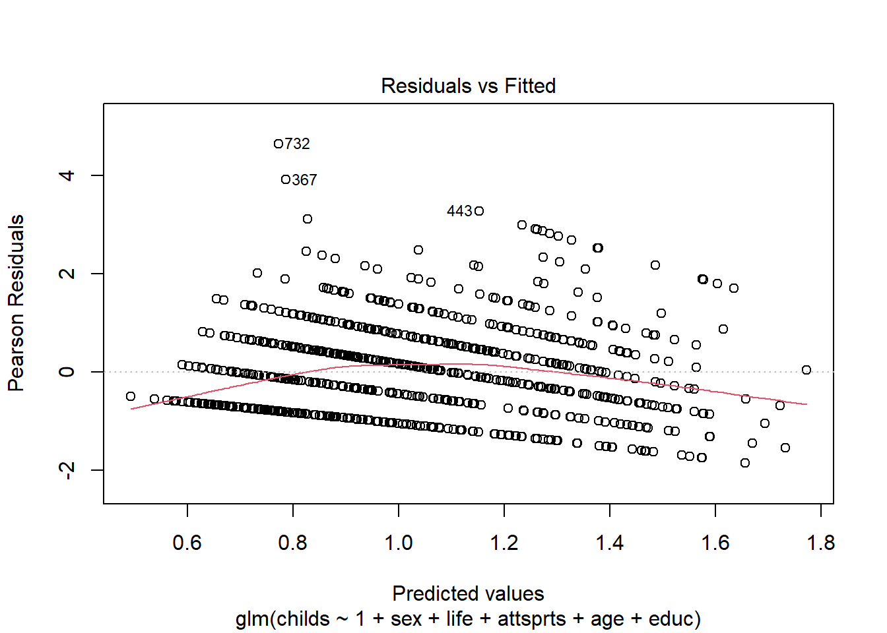
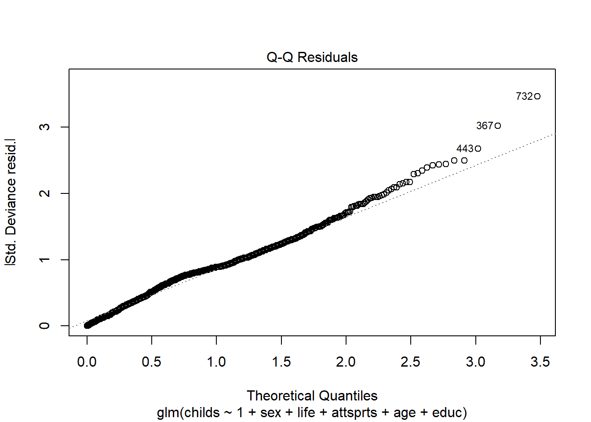
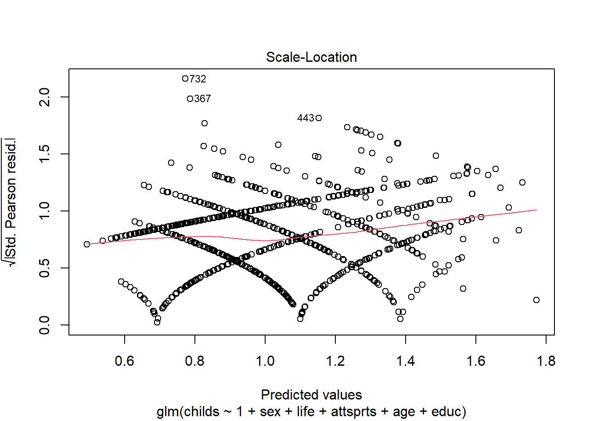
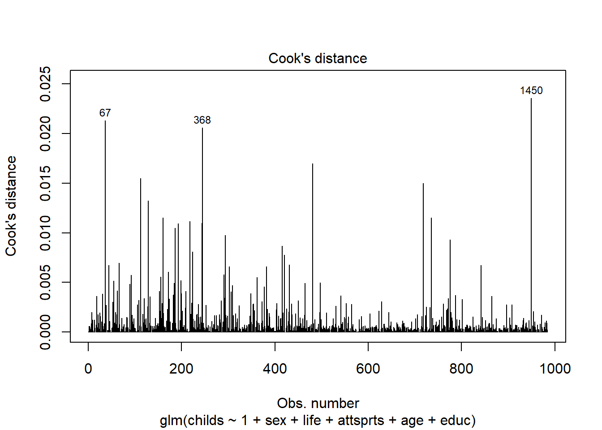
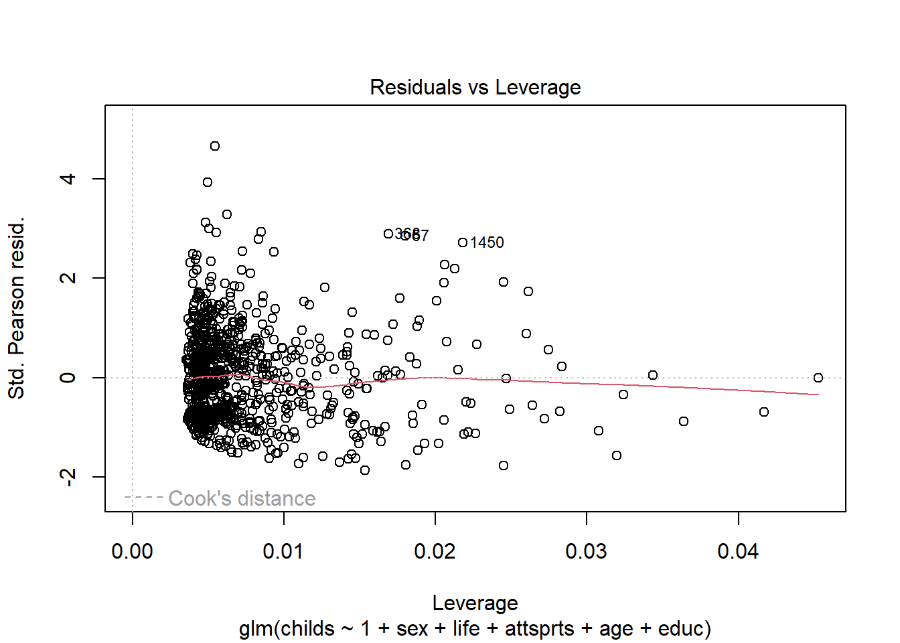
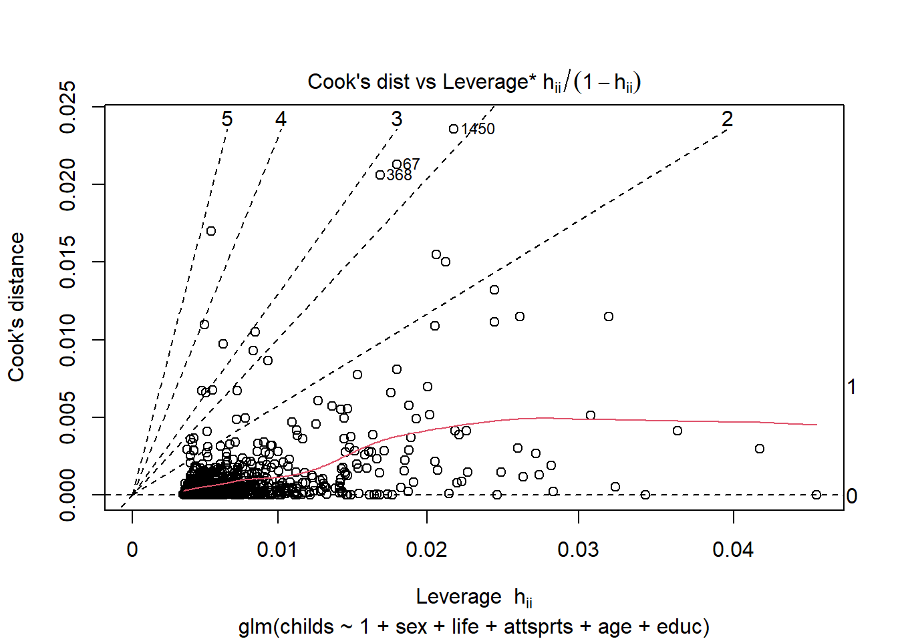

library(emmeans)
library(tidyverse)
library(lme4)
library(nlme)
library(flexplot)
library(foreign)
library(dplyr)
library(multcomp)
library(effects)
library(sjstats)
library(sjPlot)
library(tm)
library(report)
library(ggplot2)
library(forcats)
library(performance)
library(rempsyc)
library(easystats)
library(kableExtra)
library(fitdistrplus)
library(AER)
library(gtsummary)
library(broom)5 Lista 5 - Generalized Linear Model Aula Prática
Esta é uma lista focada em GLzM independente. Vamos realizar testes baseados no banco de dados Dados Amostra.
5.1 Carregando os dados e modificando o tipo de variável
original = read.spss("Dados Amostra.sav", to.data.frame=TRUE)5.2 Boas práticas
Ter um clone do banco de dados e manter ele no formato original. Podemos ir comparando todas as mudanças de maneira ágil. Vamos também já verificar os tipos de variáveis que temos no banco de dados e realizar mudanças, caso necessário.
db = original
kable(head(db))| id | childs | age | educ | sex | life | tvhours | attsprts | tempo_obs | aderencia |
|---|---|---|---|---|---|---|---|---|---|
| 188 | 2 | 76 | 14 | Female | Routine | 5 | NA | 123 | SIM |
| 730 | 2 | 48 | 12 | Female | Routine | 1 | NA | 424 | SIM |
| 855 | 0 | 19 | 13 | Male | Exciting | 1 | NA | 124 | SIM |
| 866 | 0 | 38 | 16 | Female | Exciting | NA | NA | 500 | SIM |
| 1165 | 3 | 54 | 16 | Female | NA | 3 | NA | 500 | SIM |
| 1225 | 2 | 53 | NA | Female | Dull | 4 | NA | 500 | SIM |
Não queremos que o número de filhos (childs), idade (age), nível escolaridade (educ) e horas de TV (tvhours) sejam categóricas. Vamos alterar para que sejam numéricas com a função as.numeric().
# Modificando o tipo das variáveis. Apenas Life, Sex, attsprts e aderencia devem ser categóricas.
db$childs = as.integer(db$childs)
db$age = as.numeric(db$age)
db$educ = as.numeric(db$educ)
db$tvhours = as.numeric(db$tvhours)Observando como elas estão agora, podemos também utilizar a função glimpse().
glimpse(db)Rows: 1,500
Columns: 10
$ id <dbl> 188, 730, 855, 866, 1165, 1225, 1294, 1339, 1343, 168, 1390,…
$ childs <int> 3, 3, 1, 1, 4, 3, 4, NA, NA, 1, 3, 2, 1, 1, 1, 3, 1, 2, 5, 4…
$ age <dbl> 59, 31, 2, 21, 37, 36, 48, 35, 55, 65, 38, 26, 27, 26, 28, 6…
$ educ <dbl> 13, 11, 12, 15, 15, NA, 11, 11, 8, 14, 11, 10, 15, 15, 14, 1…
$ sex <fct> Female, Female, Male, Female, Female, Female, Male, Female, …
$ life <fct> Routine, Routine, Exciting, Exciting, NA, Dull, NA, NA, NA, …
$ tvhours <dbl> 6, 2, 2, NA, 4, 5, 2, NA, NA, 3, 3, 5, 6, 3, 5, 5, 5, 4, 7, …
$ attsprts <fct> NA, NA, NA, NA, NA, NA, NA, NA, NA, NA, NA, No, No, No, No, …
$ tempo_obs <dbl> 123.0000, 424.0000, 124.0000, 500.0000, 500.0000, 500.0000, …
$ aderencia <fct> SIM, SIM, SIM, SIM, SIM, SIM, SIM, SIM, SIM, SIM, SIM, SIM, …5.3 Verificando a representatividade dos dados
xtabs(~ attsprts + sex, data = db) sex
attsprts Male Female
Yes 384 407
No 254 444xtabs(~ attsprts + life, data = db) life
attsprts Dull Routine Exciting
Yes 16 226 281
No 48 230 190xtabs(~ attsprts + aderencia , data = db) aderencia
attsprts Não SIM
Yes 750 41
No 0 6985.4 a) e b) GLzM - Praticar ou não esportes
Exercício
Verifique qual o efeito do sexo, o que as pessoas acham da vida (life), número de filhos, idade, anos de escolaridade e horas de tv sobre o fato dela praticar ou não esportes (Attsports). Faça um GLzM e descreva os resultados adequadamente.
Verificando quais os níveis de referência.
levels(db$attsprts)[1] "Yes" "No" levels(db$sex)[1] "Male" "Female"levels(db$life)[1] "Dull" "Routine" "Exciting"levels(db$aderencia)[1] "Não" "SIM"Para os resultados ficarem similares aos da aula prática, vamos modificar o nível de referência da variável attsprts para “No”
db$attsprts = relevel(db$attsprts, ref = "No")
levels(db$attsprts)[1] "No" "Yes"5.5 Criando o modelo
modelo_1 <- glm(attsprts ~ 1 + sex + life + childs + educ + tvhours + age,
data = db,
family = "binomial")
#na.action = na.exclude -> para remover os NAs5.6 Resultados do modelo
Vamos começar mais uma vez vendo o resultado que a função summary() nos oferece.
summary(modelo_1)
Call:
glm(formula = attsprts ~ 1 + sex + life + childs + educ + tvhours +
age, family = "binomial", data = db)
Coefficients:
Estimate Std. Error z value Pr(>|z|)
(Intercept) -1.625849 0.560416 -2.901 0.00372 **
sexFemale -0.452288 0.145961 -3.099 0.00194 **
lifeRoutine 0.649746 0.333770 1.947 0.05157 .
lifeExciting 0.787760 0.336597 2.340 0.01926 *
childs 0.121782 0.049603 2.455 0.01408 *
educ 0.200783 0.029138 6.891 5.55e-12 ***
tvhours -0.097926 0.039787 -2.461 0.01384 *
age -0.036856 0.004969 -7.417 1.20e-13 ***
---
Signif. codes: 0 '***' 0.001 '**' 0.01 '*' 0.05 '.' 0.1 ' ' 1
(Dispersion parameter for binomial family taken to be 1)
Null deviance: 1352.4 on 977 degrees of freedom
Residual deviance: 1143.6 on 970 degrees of freedom
(522 observations deleted due to missingness)
AIC: 1159.6
Number of Fisher Scoring iterations: 4Novamente não é o melhor dos mundos mas temos os valores de p e podemos observar quais variáveis deram resultados significativos.
Para melhorar a visualização e trazer os resultados em Odds Ratio podemos utilizar a função tab_model() do pacote sjPlot.
tab_model(modelo_1,
show.se = TRUE,
show.aic = TRUE,
show.loglik=TRUE,
show.ci = FALSE)| attsprts | |||
| Predictors | Odds Ratios | std. Error | p |
| (Intercept) | 0.20 | 0.11 | 0.004 |
| sex [Female] | 0.64 | 0.09 | 0.002 |
| life [Routine] | 1.92 | 0.64 | 0.052 |
| life [Exciting] | 2.20 | 0.74 | 0.019 |
| childs | 1.13 | 0.06 | 0.014 |
| educ | 1.22 | 0.04 | <0.001 |
| tvhours | 0.91 | 0.04 | 0.014 |
| age | 0.96 | 0.00 | <0.001 |
| Observations | 978 | ||
| R2 Tjur | 0.194 | ||
| AIC | 1159.552 | ||
| log-Likelihood | -571.776 | ||
Bem melhor!
Dica!
Veja a seção sec-extrasV para uma explicação sobre correções para os valores de p, como Bonferroni, Holm, Hochberg e Hommel.
Para não precisar ficar mudando a referência e conseguir interpretar valores menores que 1, podemos utilizar a função estimates() do pacote flexplot.
estimates(modelo_1) raw.coefficients OR inverse.OR standardized.OR
(Intercept) -1.626 0.197 5.083 1.000
sexFemale -0.452 0.636 1.572 0.799
lifeRoutine 0.650 1.915 0.522 1.383
lifeExciting 0.788 2.198 0.455 1.482
childs 0.122 1.130 0.885 1.230
educ 0.201 1.222 0.818 1.837
tvhours -0.098 0.907 1.103 0.821
age -0.037 0.964 1.038 0.527
inverse.standardized.OR Prediction Difference (+/- 1 SD)
(Intercept) 1.000 <NA>
sexFemale 1.251 -0.11 (relative to sexMale)
lifeRoutine 0.723 0.16 (relative to lifeDull)
lifeExciting 0.675 0.19 (relative to lifeDull)
childs 0.813 0.1
educ 0.544 0.29
tvhours 1.219 0.1
age 1.899 0.3Na coluna “inverse.OR” temos os valores invertendo a ordem das referências. No caso da variável sexo, podemos observar que o valor de odds ratio para “Female” quando comparado com “Male” (Female - Male) é de 0,636. O Inverse.OR nos mostra o valor caso o nível de referência fosse invertido (Male - Female).
A interpretação do resultado, levando em conta o inverse.OR, também será invertida. Lembrando sempre que o valor de referência para a VD é “Não fazer esportes” (sedentarismo). Portanto podemos escrever um parágrafo de resultados assim:
“Pessoas do sexo feminino tem 1,57 mais chance de pertencer ao grupo que faz exercícios em relação à pessoas do sexo masculino.”
Caso fique na dúvida, podemos sempre mudar o nível de referência da variável independente de interesse, rodar novamente o modelo e comparar os resultados.
# Alterando o nível de referência
db$sex = relevel(db$sex, ref = "Female")# Verificando se a troca ocorreu
levels(db$sex)[1] "Female" "Male" # Rodando novamente o modelo
modelo_1b <- glm(attsprts ~ 1 + sex + life + childs + educ + tvhours + age,
data = db,
family = "binomial")
#na.action = na.exclude -> para remover os NAsestimates(modelo_1b) raw.coefficients OR inverse.OR standardized.OR
(Intercept) -2.078 0.125 7.990 1.000
sexMale 0.452 1.572 0.636 1.251
lifeRoutine 0.650 1.915 0.522 1.383
lifeExciting 0.788 2.198 0.455 1.482
childs 0.122 1.130 0.885 1.230
educ 0.201 1.222 0.818 1.837
tvhours -0.098 0.907 1.103 0.821
age -0.037 0.964 1.038 0.527
inverse.standardized.OR Prediction Difference (+/- 1 SD)
(Intercept) 1.000 <NA>
sexMale 0.799 0.11 (relative to sexFemale)
lifeRoutine 0.723 0.16 (relative to lifeDull)
lifeExciting 0.675 0.19 (relative to lifeDull)
childs 0.813 0.1
educ 0.544 0.29
tvhours 1.219 0.1
age 1.899 0.3Podemos observar que o valor de OR para “Male” quando comparado com “Female” (Male - Female) é idêntico ao inverse.OR quando a referência era “Male”.
Agora temos que interpretar de forma direta os resultados e ficaria assim:
“Pessoas do sexo masculino tem 1,57 mais chance de pertencer ao grupo que não faz exercícios em relação à pessoas do sexo feminino”
Cuidado!
Percebam que é fácil se enrolar com a descrição dos resultados. Faça da maneira que se sentir mais a vontade dentre as duas apresentadas e verifique sempre o nível de referência das variáveis.
5.7 c) Comparando modelos
Exercício
Os resultados das questões A e B são similares? Se sim, porque? Se não, qual dos modelos é mais adequado?
Aqui no R vamos apenas criar o modelo com a função do GzLM. Você pode criar um modelo com o módulo de regressão logística no Jamovi e comparar os resultados apresentados anteriormente.
5.8 d) e e) Número de filhos (VD)
Exercício
Verifique o efeito do sexo, opinião sobre a vida (life) e prática de exercícios (attsports) sobre o número de filhos. Controle os resultados para idade e anos de escolaridade. Faça um GLM Univariado e um GLzM para a mesma pergunta
Podemos utilizar a mesma função glm() para criar os dois modelos.
Modelo GLM
modelo_2 <- glm(childs ~ 1 + sex + life + attsprts + age + educ,
data = db)Como estamos analisando um modelo linear univariado assumindo que a distribuição da VD é normal, podemos interpretar diretamente os estimadores que são retornados pela função summary.
kable(summary(modelo_2)$coef)| Estimate | Std. Error | t value | Pr(>|t|) | |
|---|---|---|---|---|
| (Intercept) | 2.8726230 | 0.2926723 | 9.8151502 | 0.0000000 |
| sexMale | -0.1863170 | 0.0989903 | -1.8821732 | 0.0601095 |
| lifeRoutine | -0.3467610 | 0.2066828 | -1.6777451 | 0.0937167 |
| lifeExciting | -0.2098896 | 0.2104225 | -0.9974676 | 0.3187845 |
| attsprtsYes | 0.2586856 | 0.1075859 | 2.4044569 | 0.0163818 |
| age | 0.0387229 | 0.0029938 | 12.9342252 | 0.0000000 |
| educ | -0.0822842 | 0.0178006 | -4.6225436 | 0.0000043 |
E chamar a função report() para gerar os resultados.
report(modelo_2)We fitted a linear model (estimated using ML) to predict childs with sex, life,
attsprts, age and educ (formula: childs ~ 1 + sex + life + attsprts + age +
educ). The model's explanatory power is moderate (R2 = 0.20). The model's
intercept, corresponding to sex = Female, life = Dull, attsprts = No, age = 0
and educ = 0, is at 2.87 (95% CI [2.30, 3.45], t(977) = 9.82, p < .001). Within
this model:
- The effect of sex [Male] is statistically non-significant and negative (beta
= -0.19, 95% CI [-0.38, 7.70e-03], t(977) = -1.88, p = 0.060; Std. beta =
-0.11, 95% CI [-0.22, 4.53e-03])
- The effect of life [Routine] is statistically non-significant and negative
(beta = -0.35, 95% CI [-0.75, 0.06], t(977) = -1.68, p = 0.093; Std. beta =
-0.20, 95% CI [-0.44, 0.03])
- The effect of life [Exciting] is statistically non-significant and negative
(beta = -0.21, 95% CI [-0.62, 0.20], t(977) = -1.00, p = 0.319; Std. beta =
-0.12, 95% CI [-0.37, 0.12])
- The effect of attsprts [Yes] is statistically significant and positive (beta
= 0.26, 95% CI [0.05, 0.47], t(977) = 2.40, p = 0.016; Std. beta = 0.15, 95% CI
[0.03, 0.28])
- The effect of age is statistically significant and positive (beta = 0.04, 95%
CI [0.03, 0.04], t(977) = 12.93, p < .001; Std. beta = 0.40, 95% CI [0.34,
0.46])
- The effect of educ is statistically significant and negative (beta = -0.08,
95% CI [-0.12, -0.05], t(977) = -4.62, p < .001; Std. beta = -0.15, 95% CI
[-0.21, -0.08])
Standardized parameters were obtained by fitting the model on a standardized
version of the dataset. 95% Confidence Intervals (CIs) and p-values were
computed using a Wald t-distribution approximation.Modelo Poisson
modelo_3 <- glm(childs ~ 1 + sex + life + attsprts + age + educ,
data = db,
family = "poisson")Comparando AIC os modelos
Podemos comparar os índices de aderência dos dois modelos para verificar qual se ajusta melhor aos dados.
AIC(modelo_2, modelo_3) df AIC
modelo_2 8 3630.810
modelo_3 7 3498.782BIC(modelo_2, modelo_3) df BIC
modelo_2 8 3669.943
modelo_3 7 3533.024Podemos observar que tanto o AIC quanto o BIC favorecem o modelo_3 com distribuição Poisson.
Resultados
Sempre começando com a boa e velha função summary().
summary(modelo_3)
Call:
glm(formula = childs ~ 1 + sex + life + attsprts + age + educ,
family = "poisson", data = db)
Coefficients:
Estimate Std. Error z value Pr(>|z|)
(Intercept) 0.988656 0.110271 8.966 < 2e-16 ***
sexMale -0.067072 0.039024 -1.719 0.0857 .
lifeRoutine -0.102725 0.074303 -1.383 0.1668
lifeExciting -0.052165 0.075989 -0.686 0.4924
attsprtsYes 0.095588 0.042782 2.234 0.0255 *
age 0.013111 0.001144 11.462 < 2e-16 ***
educ -0.026711 0.006805 -3.925 8.67e-05 ***
---
Signif. codes: 0 '***' 0.001 '**' 0.01 '*' 0.05 '.' 0.1 ' ' 1
(Dispersion parameter for poisson family taken to be 1)
Null deviance: 951.59 on 983 degrees of freedom
Residual deviance: 757.85 on 977 degrees of freedom
(516 observations deleted due to missingness)
AIC: 3498.8
Number of Fisher Scoring iterations: 4Temos que idade (age), nível de educação (educ) e praticar esportes (attsportsYes) são significativos.
E agora podemos utilizando mais uma vez a função estimates() para ver os valores de de cada variável exp(B). Reparem que aqui não teremos as Odds Ratio, mas sim uma coluna chamada multiplicative.coef, que no caso de modelos Poisson de desenho transversal é a razão de prevalência. A maneira de interpretar é a mesma da regressão logística.
estimates(modelo_3) raw.coefficients multiplicative.coef std.mult.coef
(Intercept) 0.989 2.688 1.000
sexMale -0.067 0.935 0.967
lifeRoutine -0.103 0.902 0.950
lifeExciting -0.052 0.949 0.974
attsprtsYes 0.096 1.100 1.049
age 0.013 1.013 1.257
educ -0.027 0.974 0.922
Prediction Difference (+/- 1 SD)
(Intercept) <NA>
sexMale -0.17 (relative to sexFemale)
lifeRoutine -0.26 (relative to lifeDull)
lifeExciting -0.14 (relative to lifeDull)
attsprtsYes 0.24 (relative to attsprtsNo)
age 1.12
educ 0.39exp(modelo_3$coefficients) (Intercept) sexMale lifeRoutine lifeExciting attsprtsYes age
2.6876196 0.9351281 0.9023752 0.9491727 1.1003059 1.0131971
educ
0.9736426 Escrevendo o parágrafo de um dos resultados temos algo como:
“Pessoas que pertencem ao grupo que fazem esportes tem 10% a mais de chance de terem um filho quando comparadas com pessoas que são sedentárias.
No caso do nível educacional precisamos calcular o exp(B) inverso e ter cuidado na interpretação do resultado.
kable(exp(-coef(modelo_3)))| x | |
|---|---|
| (Intercept) | 0.3720765 |
| sexMale | 1.0693722 |
| lifeRoutine | 1.1081865 |
| lifeExciting | 1.0535491 |
| attsprtsYes | 0.9088382 |
| age | 0.9869748 |
| educ | 1.0270709 |
Temos que para cada nível a mais de educação a chance de ter filhos diminui em aproximadamente 3%.
Cuidado!
Não recomendamos utilizar a função report() para modelos Poisson e de regressão logística. Os resultados apresenta
report(modelo_3)We fitted a poisson model (estimated using ML) to predict childs with sex,
life, attsprts, age and educ (formula: childs ~ 1 + sex + life + attsprts + age
+ educ). The model's explanatory power is substantial (Nagelkerke's R2 = 0.29).
The model's intercept, corresponding to sex = Female, life = Dull, attsprts =
No, age = 0 and educ = 0, is at 0.99 (95% CI [0.77, 1.20], p < .001). Within
this model:
- The effect of sex [Male] is statistically non-significant and negative (beta
= -0.07, 95% CI [-0.14, 9.25e-03], p = 0.086; Std. beta = -0.07, 95% CI [-0.14,
9.25e-03])
- The effect of life [Routine] is statistically non-significant and negative
(beta = -0.10, 95% CI [-0.25, 0.05], p = 0.167; Std. beta = -0.10, 95% CI
[-0.25, 0.05])
- The effect of life [Exciting] is statistically non-significant and negative
(beta = -0.05, 95% CI [-0.20, 0.10], p = 0.492; Std. beta = -0.05, 95% CI
[-0.20, 0.10])
- The effect of attsprts [Yes] is statistically significant and positive (beta
= 0.10, 95% CI [0.01, 0.18], p = 0.025; Std. beta = 0.10, 95% CI [0.01, 0.18])
- The effect of age is statistically significant and positive (beta = 0.01, 95%
CI [0.01, 0.02], p < .001; Std. beta = 0.23, 95% CI [0.19, 0.27])
- The effect of educ is statistically significant and negative (beta = -0.03,
95% CI [-0.04, -0.01], p < .001; Std. beta = -0.08, 95% CI [-0.12, -0.04])
Standardized parameters were obtained by fitting the model on a standardized
version of the dataset. 95% Confidence Intervals (CIs) and p-values were
computed using a Wald z-distribution approximation.Crie mais modelos com interações entre as variáveis para praticar. Compare os índices de aderência dos modelos e depois descreva o que melhor se adequa aos dados.
5.9 Lista 5 resolvida no SPSS
5.10 Extras!
Resultados dos modelos na unha
modelo_4 <- glm(childs ~ sex * life * attsprts + age + educ,
data = db,
family = "poisson")# Obter o resumo estatístico do modelo
resumo_modelo <- summary(modelo_4)
# Extrair os valores de p e os coeficientes
valores_p <- resumo_modelo$coefficients[, "Pr(>|z|)"]
coeficientes <- resumo_modelo$coefficients[, "Estimate"]
# Calcular os asteriscos para os níveis de significância
asteriscos <- ifelse(valores_p < 0.001, "***",
ifelse(valores_p < 0.01, "**",
ifelse(valores_p < 0.05, "*", "")))
# Calcular as estimativas de RR e intervalos de confiança
RP <- exp(coef(modelo_4))
IC <- exp(confint(modelo_4))Waiting for profiling to be done...# Criar o dataframe parametros_modelo_2
parametros_modelo_4 <- data.frame(
RP = round(RP, 2),
IC_Lower = round(IC[, 1], 2),
IC_Upper = round(IC[, 2], 2),
Valores_p = round(valores_p, 4),
Significância = asteriscos
)
parametros_modelo_4 RP IC_Lower IC_Upper Valores_p Significância
(Intercept) 2.67 2.09 3.39 0.0000 ***
sexMale 0.87 0.61 1.21 0.4045
lifeRoutine 0.91 0.74 1.12 0.3565
lifeExciting 0.93 0.76 1.15 0.5210
attsprtsYes 1.19 0.81 1.72 0.3573
age 1.01 1.01 1.02 0.0000 ***
educ 0.97 0.96 0.99 0.0002 ***
sexMale:lifeRoutine 1.12 0.78 1.64 0.5468
sexMale:lifeExciting 1.03 0.71 1.53 0.8619
sexMale:attsprtsYes 1.03 0.51 2.01 0.9373
lifeRoutine:attsprtsYes 0.91 0.61 1.38 0.6476
lifeExciting:attsprtsYes 0.93 0.63 1.40 0.7128
sexMale:lifeRoutine:attsprtsYes 0.88 0.43 1.84 0.7297
sexMale:lifeExciting:attsprtsYes 1.07 0.52 2.23 0.8600 Pressupostos dos modelos Poisson
plot(modelo_3, which = 1:6)





Overdispersion
dispersiontest(modelo_3, trafo = 1)
Overdispersion test
data: modelo_3
z = -5.1887, p-value = 1
alternative hypothesis: true alpha is greater than 0
sample estimates:
alpha
-0.2078915 Podemos também chamar a correção de Bonferroni para sermos mais conservadores com nossos resutlados.
tab_model(modelo_1,
show.se = TRUE,
show.aic = TRUE,
show.loglik=TRUE,
show.ci = FALSE,
p.adjust = "bonferroni")| attsprts | |||
| Predictors | Odds Ratios | std. Error | p |
| (Intercept) | 0.20 | 0.11 | 0.030 |
| sex [Female] | 0.64 | 0.09 | 0.016 |
| life [Routine] | 1.92 | 0.64 | 0.413 |
| life [Exciting] | 2.20 | 0.74 | 0.154 |
| childs | 1.13 | 0.06 | 0.113 |
| educ | 1.22 | 0.04 | <0.001 |
| tvhours | 0.91 | 0.04 | 0.111 |
| age | 0.96 | 0.00 | <0.001 |
| Observations | 978 | ||
| R2 Tjur | 0.194 | ||
| AIC | 1159.552 | ||
| log-Likelihood | -571.776 | ||
A correção de Bonferroni é um método utilizado para controlar o erro tipo I (falso positivo) em testes de hipóteses múltiplos. Quando você realiza vários testes simultaneamente, há um aumento no risco de obter resultados significativos simplesmente devido ao acaso (erro tipo I).
O método de Bonferroni ajusta os valores-p obtidos nos testes individuais para reduzir a probabilidade global de cometer um erro tipo I. A correção é feita dividindo o nível de significância (geralmente 0,05) pelo número total de testes realizados. Cada teste individual deve, então, ter um valor de significância ajustado para compensar o número de comparações.
A fórmula para a correção de Bonferroni é:
\[ Valor_-p_-Ajustado = Valor_-de_-Significância_-Original/ Número_-Total_-de_-Testes \] Por exemplo, suponha que você esteja conduzindo 5 testes de hipóteses e deseje manter um nível global de significância de 0,05. A correção de Bonferroni ajustaria o valor de significância para cada teste individual, resultando em 0,05/5=0,010,05/5=0,01.
Contudo, é importante destacar que a correção de Bonferroni tende a ser conservadora, o que significa que pode aumentar a probabilidade de erro tipo II (falso negativo), dificultando a detecção de diferenças ou efeitos reais. Existem alternativas menos conservadoras, como as correções de Holm ou Hochberg, que buscam um equilíbrio entre controle de erro e poder estatístico. A escolha da correção a ser utilizada depende do contexto específico da análise.
tidy(modelo_1, exponentiate = TRUE,
conf.int = TRUE)# A tibble: 8 × 7
term estimate std.error statistic p.value conf.low conf.high
<chr> <dbl> <dbl> <dbl> <dbl> <dbl> <dbl>
1 (Intercept) 0.197 0.560 -2.90 3.72e- 3 0.0646 0.583
2 sexFemale 0.636 0.146 -3.10 1.94e- 3 0.477 0.846
3 lifeRoutine 1.92 0.334 1.95 5.16e- 2 1.01 3.77
4 lifeExciting 2.20 0.337 2.34 1.93e- 2 1.15 4.34
5 childs 1.13 0.0496 2.46 1.41e- 2 1.03 1.25
6 educ 1.22 0.0291 6.89 5.55e-12 1.16 1.30
7 tvhours 0.907 0.0398 -2.46 1.38e- 2 0.838 0.980
8 age 0.964 0.00497 -7.42 1.20e-13 0.954 0.973Pseudo R²
Função para calcular todos os três R2
Comentando cada linha temos:
dev<-LogModel$deviance extrai o desvio do modelo (−2LL(new)) do modelo inserido na função
e chama isso de dev.
nullDev<-LogModel$null.deviance extrai o desvio da linha de base (−2LL(linha de base)) do modelo inserido a função e as chamadas são nullDev.
modelN<-length(LogModel$fitted.values) usa a função length() no valor ajustado para calcular a amostra size, que ele chama de modelN.
R.l <- 1 - dev/nullDev calcula a medida de Hosmer e Lemeshow (R2L) usando os valores extraídos do
modelo e o chama de R.l.
R.cs<- 1- exp ( -(nullDev - dev)/modelN): calcula a medida de Cox e Snell (R2CS) usando os valores extraídos do modelo e o chama de R.cs.
R.n <- R.cs / ( 1 - ( exp (-(nullDev / modelN)))) calcula a medida de Nagelkerke (R2N) usando os valores extraídos do modelo e o chama de R.n.
logisticPseudoR2s <- function(LogModel) {
dev <- LogModel$deviance
nullDev <- LogModel$null.deviance
modelN <- length(LogModel$fitted.values)
R.l <- 1 - dev / nullDev
R.cs <- 1- exp ( -(nullDev - dev) / modelN)
R.n <- R.cs / ( 1 - ( exp (-(nullDev / modelN))))
resultados <- data.frame(
Metodo = c("Hosmer-Lemeshow", "Cox-Snell", "Nagelkerke"),
Pseudo_R2 = c(round(R.l, 3), round(R.cs, 3), round(R.n, 3)))
return(resultados)
}
logisticPseudoR2s(modelo_3) Metodo Pseudo_R2
1 Hosmer-Lemeshow 0.204
2 Cox-Snell 0.179
3 Nagelkerke 0.288#exp(modelo_1$coefficients)O R² (R-squared) em modelos de regressão linear é uma métrica que representa a proporção da variabilidade da variável dependente que é explicada pelo modelo. No entanto, ao lidar com modelos de regressão logística ou outros modelos generalizados, a interpretação direta do R² torna-se mais complexa devido à natureza da função de ligação utilizada.
Por isso, foi desenvolvido o Pseudo R² como uma medida análoga ao R², mas adaptada para modelos logísticos. Existem várias versões de Pseudo R², e a interpretação pode variar dependendo da versão específica utilizada. Aqui, abordarei uma interpretação geral.
Diferenças principais entre R² e Pseudo R²:
Interpretação Direta: R² (em modelos lineares): Representa a proporção da variância explicada pela variável independente(s). Pseudo R² (em modelos logísticos): Oferece uma medida análoga, mas a interpretação é menos direta, pois está relacionada à verossimilhança e à diferença entre a verossimilhança do modelo ajustado e a verossimilhança de um modelo nulo.
Intervalo de Valores: R² (em modelos lineares): Pode variar de 0 a 1, indicando a porcentagem da variabilidade explicada pela variável independente. Pseudo R² (em modelos logísticos): Pode variar de 0 a 1, mas o significado exato depende da versão específica. Em alguns casos, um Pseudo R² mais alto indica um melhor ajuste, mas a interpretação exata pode variar.
Quando usar poisson e bin negativa?
Comparar AIC/BIC Variância maior que a média -> Usar bin negativa Poisson overdisperssion = Evento muito raro, com muitos zeros no banco.
5.11 Referências
5.12 Versões dos pacotes
report(sessionInfo())Analyses were conducted using the R Statistical language (version 4.3.1; R Core
Team, 2023) on Windows 11 x64 (build 22621), using the packages lme4 (version
1.1.34; Bates D et al., 2015), Matrix (version 1.6.0; Bates D et al., 2023),
effectsize (version 0.8.6; Ben-Shachar MS et al., 2020), fitdistrplus (version
1.1.11; Delignette-Muller ML, Dutang C, 2015), tm (version 0.7.11; Feinerer I,
Hornik K, 2023), flexplot (version 0.20.5; Fife D, 2024), effects (version
4.2.2; Fox J, Weisberg S, 2019), car (version 3.1.2; Fox J, Weisberg S, 2019),
carData (version 3.0.5; Fox J et al., 2022), mvtnorm (version 1.2.3; Genz A,
Bretz F, 2009), lubridate (version 1.9.3; Grolemund G, Wickham H, 2011), NLP
(version 0.2.1; Hornik K, 2020), TH.data (version 1.1.2; Hothorn T, 2023),
multcomp (version 1.4.25; Hothorn T et al., 2008), AER (version 1.2.10; Kleiber
C, Zeileis A, 2008), emmeans (version 1.8.8; Lenth R, 2023), sjstats (version
0.18.2; Lüdecke D, 2022), sjPlot (version 2.8.15; Lüdecke D, 2023), parameters
(version 0.21.3; Lüdecke D et al., 2020), performance (version 0.10.8; Lüdecke
D et al., 2021), easystats (version 0.6.0; Lüdecke D et al., 2022), see
(version 0.8.1; Lüdecke D et al., 2021), insight (version 0.19.6; Lüdecke D et
al., 2019), bayestestR (version 0.13.1; Makowski D et al., 2019), modelbased
(version 0.8.6; Makowski D et al., 2020), report (version 0.5.7; Makowski D et
al., 2023), correlation (version 0.8.4; Makowski D et al., 2022), tibble
(version 3.2.1; Müller K, Wickham H, 2023), datawizard (version 0.9.0; Patil I
et al., 2022), nlme (version 3.1.163; Pinheiro J et al., 2023), foreign
(version 0.8.85; R Core Team, 2023), broom (version 1.0.5; Robinson D et al.,
2023), gtsummary (version 1.7.2; Sjoberg D et al., 2021), rempsyc (version
0.1.6; Thériault R, 2023), survival (version 3.5.7; Therneau T, 2023), MASS
(version 7.3.60; Venables WN, Ripley BD, 2002), ggplot2 (version 3.4.4; Wickham
H, 2016), forcats (version 1.0.0; Wickham H, 2023), stringr (version 1.5.1;
Wickham H, 2023), tidyverse (version 2.0.0; Wickham H et al., 2019), dplyr
(version 1.1.3; Wickham H et al., 2023), purrr (version 1.0.2; Wickham H, Henry
L, 2023), readr (version 2.1.4; Wickham H et al., 2023), tidyr (version 1.3.0;
Wickham H et al., 2023), zoo (version 1.8.12; Zeileis A, Grothendieck G, 2005),
lmtest (version 0.9.40; Zeileis A, Hothorn T, 2002), sandwich (version 3.1.0;
Zeileis A et al., 2020) and kableExtra (version 1.3.4; Zhu H, 2021).
References
----------
- Bates D, Mächler M, Bolker B, Walker S (2015). "Fitting Linear Mixed-Effects
Models Using lme4." _Journal of Statistical Software_, *67*(1), 1-48.
doi:10.18637/jss.v067.i01 <https://doi.org/10.18637/jss.v067.i01>.
- Bates D, Maechler M, Jagan M (2023). _Matrix: Sparse and Dense Matrix Classes
and Methods_. R package version 1.6-0,
<https://CRAN.R-project.org/package=Matrix>.
- Ben-Shachar MS, Lüdecke D, Makowski D (2020). "effectsize: Estimation of
Effect Size Indices and Standardized Parameters." _Journal of Open Source
Software_, *5*(56), 2815. doi:10.21105/joss.02815
<https://doi.org/10.21105/joss.02815>, <https://doi.org/10.21105/joss.02815>.
- Delignette-Muller ML, Dutang C (2015). "fitdistrplus: An R Package for
Fitting Distributions." _Journal of Statistical Software_, *64*(4), 1-34.
doi:10.18637/jss.v064.i04 <https://doi.org/10.18637/jss.v064.i04>.
- Feinerer I, Hornik K (2023). _tm: Text Mining Package_. R package version
0.7-11, <https://CRAN.R-project.org/package=tm>. Feinerer I, Hornik K, Meyer D
(2008). "Text Mining Infrastructure in R." _Journal of Statistical Software_,
*25*(5), 1-54. doi:10.18637/jss.v025.i05
<https://doi.org/10.18637/jss.v025.i05>.
- Fife D (2024). _flexplot: Graphically Based Data Analysis Using 'flexplot'_.
R package version 0.20.5.
- Fox J, Weisberg S (2019). _An R Companion to Applied Regression_, 3rd
edition. Sage, Thousand Oaks CA.
<https://socialsciences.mcmaster.ca/jfox/Books/Companion/index.html>. Fox J,
Weisberg S (2018). "Visualizing Fit and Lack of Fit in Complex Regression
Models with Predictor Effect Plots and Partial Residuals." _Journal of
Statistical Software_, *87*(9), 1-27. doi:10.18637/jss.v087.i09
<https://doi.org/10.18637/jss.v087.i09>. Fox J (2003). "Effect Displays in R
for Generalised Linear Models." _Journal of Statistical Software_, *8*(15),
1-27. doi:10.18637/jss.v008.i15 <https://doi.org/10.18637/jss.v008.i15>. Fox J,
Hong J (2009). "Effect Displays in R for Multinomial and Proportional-Odds
Logit Models: Extensions to the effects Package." _Journal of Statistical
Software_, *32*(1), 1-24. doi:10.18637/jss.v032.i01
<https://doi.org/10.18637/jss.v032.i01>.
- Fox J, Weisberg S (2019). _An R Companion to Applied Regression_, Third
edition. Sage, Thousand Oaks CA.
<https://socialsciences.mcmaster.ca/jfox/Books/Companion/>.
- Fox J, Weisberg S, Price B (2022). _carData: Companion to Applied Regression
Data Sets_. R package version 3.0-5,
<https://CRAN.R-project.org/package=carData>.
- Genz A, Bretz F (2009). _Computation of Multivariate Normal and t
Probabilities_, series Lecture Notes in Statistics. Springer-Verlag,
Heidelberg. ISBN 978-3-642-01688-2.
- Grolemund G, Wickham H (2011). "Dates and Times Made Easy with lubridate."
_Journal of Statistical Software_, *40*(3), 1-25.
<https://www.jstatsoft.org/v40/i03/>.
- Hornik K (2020). _NLP: Natural Language Processing Infrastructure_. R package
version 0.2-1, <https://CRAN.R-project.org/package=NLP>.
- Hothorn T (2023). _TH.data: TH's Data Archive_. R package version 1.1-2,
<https://CRAN.R-project.org/package=TH.data>.
- Hothorn T, Bretz F, Westfall P (2008). "Simultaneous Inference in General
Parametric Models." _Biometrical Journal_, *50*(3), 346-363.
- Kleiber C, Zeileis A (2008). _Applied Econometrics with R_. Springer-Verlag,
New York. ISBN 978-0-387-77316-2, <https://CRAN.R-project.org/package=AER>.
- Lenth R (2023). _emmeans: Estimated Marginal Means, aka Least-Squares Means_.
R package version 1.8.8, <https://CRAN.R-project.org/package=emmeans>.
- Lüdecke D (2022). _sjstats: Statistical Functions for Regression Models
(Version 0.18.2)_. doi:10.5281/zenodo.1284472
<https://doi.org/10.5281/zenodo.1284472>,
<https://CRAN.R-project.org/package=sjstats>.
- Lüdecke D (2023). _sjPlot: Data Visualization for Statistics in Social
Science_. R package version 2.8.15,
<https://CRAN.R-project.org/package=sjPlot>.
- Lüdecke D, Ben-Shachar M, Patil I, Makowski D (2020). "Extracting, Computing
and Exploring the Parameters of Statistical Models using R." _Journal of Open
Source Software_, *5*(53), 2445. doi:10.21105/joss.02445
<https://doi.org/10.21105/joss.02445>.
- Lüdecke D, Ben-Shachar M, Patil I, Waggoner P, Makowski D (2021).
"performance: An R Package for Assessment, Comparison and Testing of
Statistical Models." _Journal of Open Source Software_, *6*(60), 3139.
doi:10.21105/joss.03139 <https://doi.org/10.21105/joss.03139>.
- Lüdecke D, Ben-Shachar M, Patil I, Wiernik B, Makowski D (2022). "easystats:
Framework for Easy Statistical Modeling, Visualization, and Reporting." _CRAN_.
R package, <https://easystats.github.io/easystats/>.
- Lüdecke D, Patil I, Ben-Shachar M, Wiernik B, Waggoner P, Makowski D (2021).
"see: An R Package for Visualizing Statistical Models." _Journal of Open Source
Software_, *6*(64), 3393. doi:10.21105/joss.03393
<https://doi.org/10.21105/joss.03393>.
- Lüdecke D, Waggoner P, Makowski D (2019). "insight: A Unified Interface to
Access Information from Model Objects in R." _Journal of Open Source Software_,
*4*(38), 1412. doi:10.21105/joss.01412 <https://doi.org/10.21105/joss.01412>.
- Makowski D, Ben-Shachar M, Lüdecke D (2019). "bayestestR: Describing Effects
and their Uncertainty, Existence and Significance within the Bayesian
Framework." _Journal of Open Source Software_, *4*(40), 1541.
doi:10.21105/joss.01541 <https://doi.org/10.21105/joss.01541>,
<https://joss.theoj.org/papers/10.21105/joss.01541>.
- Makowski D, Ben-Shachar M, Patil I, Lüdecke D (2020). "Estimation of
Model-Based Predictions, Contrasts and Means." _CRAN_.
<https://github.com/easystats/modelbased>.
- Makowski D, Lüdecke D, Patil I, Thériault R, Ben-Shachar M, Wiernik B (2023).
"Automated Results Reporting as a Practical Tool to Improve Reproducibility and
Methodological Best Practices Adoption." _CRAN_.
<https://easystats.github.io/report/>.
- Makowski D, Wiernik B, Patil I, Lüdecke D, Ben-Shachar M (2022).
"correlation: Methods for Correlation Analysis." Version 0.8.3,
<https://CRAN.R-project.org/package=correlation>. Makowski D, Ben-Shachar M,
Patil I, Lüdecke D (2020). "Methods and Algorithms for Correlation Analysis in
R." _Journal of Open Source Software_, *5*(51), 2306. doi:10.21105/joss.02306
<https://doi.org/10.21105/joss.02306>,
<https://joss.theoj.org/papers/10.21105/joss.02306>.
- Müller K, Wickham H (2023). _tibble: Simple Data Frames_. R package version
3.2.1, <https://CRAN.R-project.org/package=tibble>.
- Patil I, Makowski D, Ben-Shachar M, Wiernik B, Bacher E, Lüdecke D (2022).
"datawizard: An R Package for Easy Data Preparation and Statistical
Transformations." _Journal of Open Source Software_, *7*(78), 4684.
doi:10.21105/joss.04684 <https://doi.org/10.21105/joss.04684>.
- Pinheiro J, Bates D, R Core Team (2023). _nlme: Linear and Nonlinear Mixed
Effects Models_. R package version 3.1-163,
<https://CRAN.R-project.org/package=nlme>. Pinheiro JC, Bates DM (2000).
_Mixed-Effects Models in S and S-PLUS_. Springer, New York. doi:10.1007/b98882
<https://doi.org/10.1007/b98882>.
- R Core Team (2023). _foreign: Read Data Stored by 'Minitab', 'S', 'SAS',
'SPSS', 'Stata', 'Systat', 'Weka', 'dBase', ..._. R package version 0.8-85,
<https://CRAN.R-project.org/package=foreign>.
- R Core Team (2023). _R: A Language and Environment for Statistical
Computing_. R Foundation for Statistical Computing, Vienna, Austria.
<https://www.R-project.org/>.
- Robinson D, Hayes A, Couch S (2023). _broom: Convert Statistical Objects into
Tidy Tibbles_. R package version 1.0.5,
<https://CRAN.R-project.org/package=broom>.
- Sjoberg D, Whiting K, Curry M, Lavery J, Larmarange J (2021). "Reproducible
Summary Tables with the gtsummary Package." _The R Journal_, *13*, 570-580.
doi:10.32614/RJ-2021-053 <https://doi.org/10.32614/RJ-2021-053>,
<https://doi.org/10.32614/RJ-2021-053>.
- Thériault R (2023). "rempsyc: Convenience functions for psychology." _Journal
of Open Source Software_, *8*(87), 5466. doi:10.21105/joss.05466
<https://doi.org/10.21105/joss.05466>, <https://doi.org/10.21105/joss.05466>.
- Therneau T (2023). _A Package for Survival Analysis in R_. R package version
3.5-7, <https://CRAN.R-project.org/package=survival>. Terry M. Therneau,
Patricia M. Grambsch (2000). _Modeling Survival Data: Extending the Cox Model_.
Springer, New York. ISBN 0-387-98784-3.
- Venables WN, Ripley BD (2002). _Modern Applied Statistics with S_, Fourth
edition. Springer, New York. ISBN 0-387-95457-0,
<https://www.stats.ox.ac.uk/pub/MASS4/>.
- Wickham H (2016). _ggplot2: Elegant Graphics for Data Analysis_.
Springer-Verlag New York. ISBN 978-3-319-24277-4,
<https://ggplot2.tidyverse.org>.
- Wickham H (2023). _forcats: Tools for Working with Categorical Variables
(Factors)_. R package version 1.0.0,
<https://CRAN.R-project.org/package=forcats>.
- Wickham H (2023). _stringr: Simple, Consistent Wrappers for Common String
Operations_. R package version 1.5.1,
<https://CRAN.R-project.org/package=stringr>.
- Wickham H, Averick M, Bryan J, Chang W, McGowan LD, François R, Grolemund G,
Hayes A, Henry L, Hester J, Kuhn M, Pedersen TL, Miller E, Bache SM, Müller K,
Ooms J, Robinson D, Seidel DP, Spinu V, Takahashi K, Vaughan D, Wilke C, Woo K,
Yutani H (2019). "Welcome to the tidyverse." _Journal of Open Source Software_,
*4*(43), 1686. doi:10.21105/joss.01686 <https://doi.org/10.21105/joss.01686>.
- Wickham H, François R, Henry L, Müller K, Vaughan D (2023). _dplyr: A Grammar
of Data Manipulation_. R package version 1.1.3,
<https://CRAN.R-project.org/package=dplyr>.
- Wickham H, Henry L (2023). _purrr: Functional Programming Tools_. R package
version 1.0.2, <https://CRAN.R-project.org/package=purrr>.
- Wickham H, Hester J, Bryan J (2023). _readr: Read Rectangular Text Data_. R
package version 2.1.4, <https://CRAN.R-project.org/package=readr>.
- Wickham H, Vaughan D, Girlich M (2023). _tidyr: Tidy Messy Data_. R package
version 1.3.0, <https://CRAN.R-project.org/package=tidyr>.
- Zeileis A, Grothendieck G (2005). "zoo: S3 Infrastructure for Regular and
Irregular Time Series." _Journal of Statistical Software_, *14*(6), 1-27.
doi:10.18637/jss.v014.i06 <https://doi.org/10.18637/jss.v014.i06>.
- Zeileis A, Hothorn T (2002). "Diagnostic Checking in Regression
Relationships." _R News_, *2*(3), 7-10.
<https://CRAN.R-project.org/doc/Rnews/>.
- Zeileis A, Köll S, Graham N (2020). "Various Versatile Variances: An
Object-Oriented Implementation of Clustered Covariances in R." _Journal of
Statistical Software_, *95*(1), 1-36. doi:10.18637/jss.v095.i01
<https://doi.org/10.18637/jss.v095.i01>. Zeileis A (2004). "Econometric
Computing with HC and HAC Covariance Matrix Estimators." _Journal of
Statistical Software_, *11*(10), 1-17. doi:10.18637/jss.v011.i10
<https://doi.org/10.18637/jss.v011.i10>. Zeileis A (2006). "Object-Oriented
Computation of Sandwich Estimators." _Journal of Statistical Software_,
*16*(9), 1-16. doi:10.18637/jss.v016.i09
<https://doi.org/10.18637/jss.v016.i09>.
- Zhu H (2021). _kableExtra: Construct Complex Table with 'kable' and Pipe
Syntax_. R package version 1.3.4,
<https://CRAN.R-project.org/package=kableExtra>.